提供水泵安裝、維修及保養服務，為客戶提供快速可靠的解決方案。
有全新泵，亦有二手翻新泵。明碼實價，任君選擇。
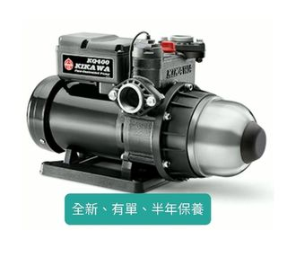
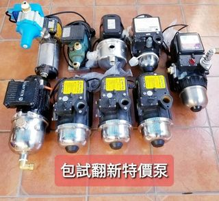
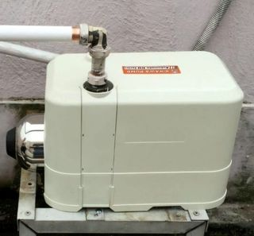
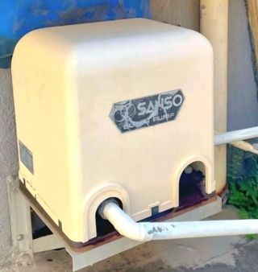
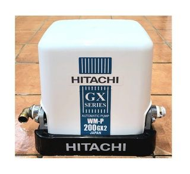
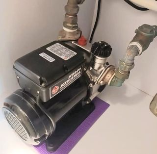
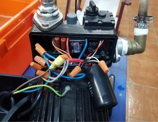
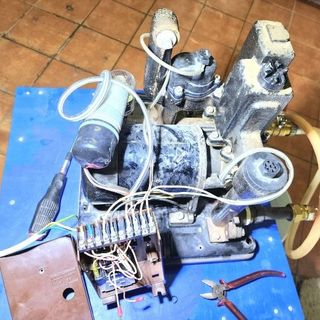
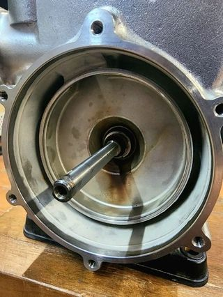
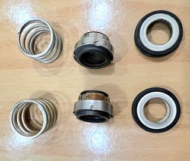
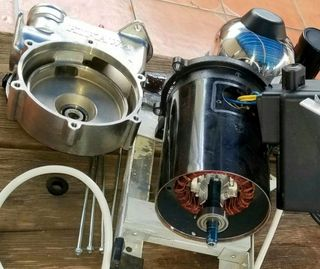
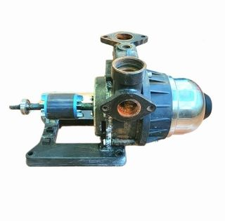
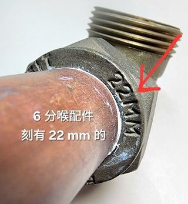
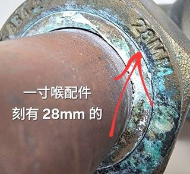
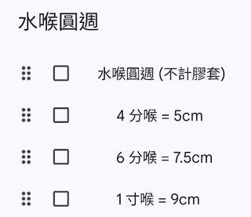
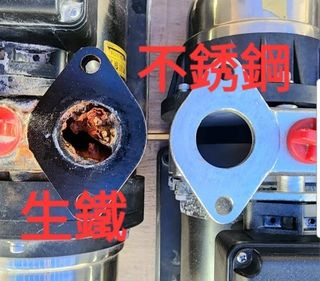
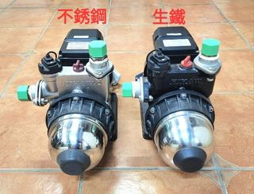
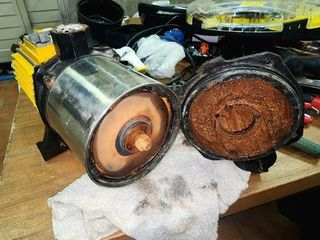
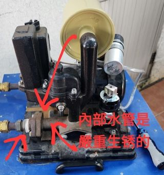
查詢報價：請提供安裝地區、新安裝或更換現有水泵、預算安裝水泵與水喉位置的相片。
上門安裝費用需按現場環境情況個別報價。
港九新界各區，偏遠地區酌量加費。
如升降機未能到達的樓層，行樓梯一層免費，其後每層加收 $20。
如需爬直梯、繩梯或出棚外工作，請事先講明並必須另外加費。
香港 WhatsApp only：6030-0442
水泵保養由泵行提供，客人需憑買貨單據，直接與泵行跟進保養事宜。
工程費用並不包括任何保險在內，如有需要，客人請自行安排保險事宜。
施工期間，如有不可預測的財物損毀，不會作出任何賠償。